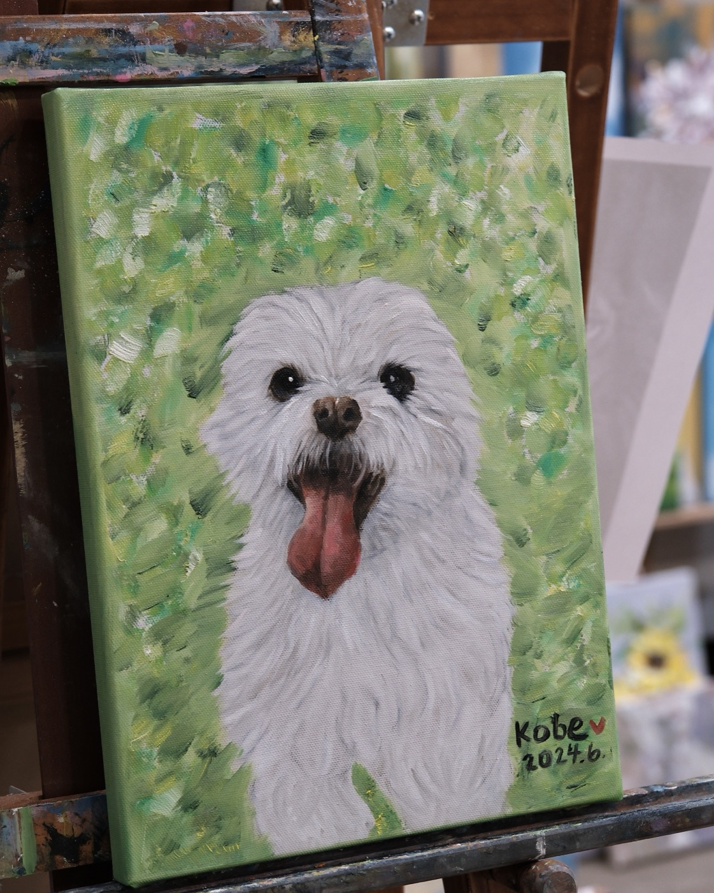
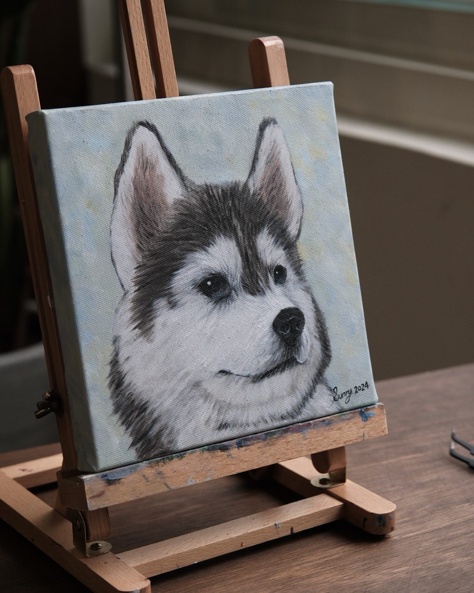
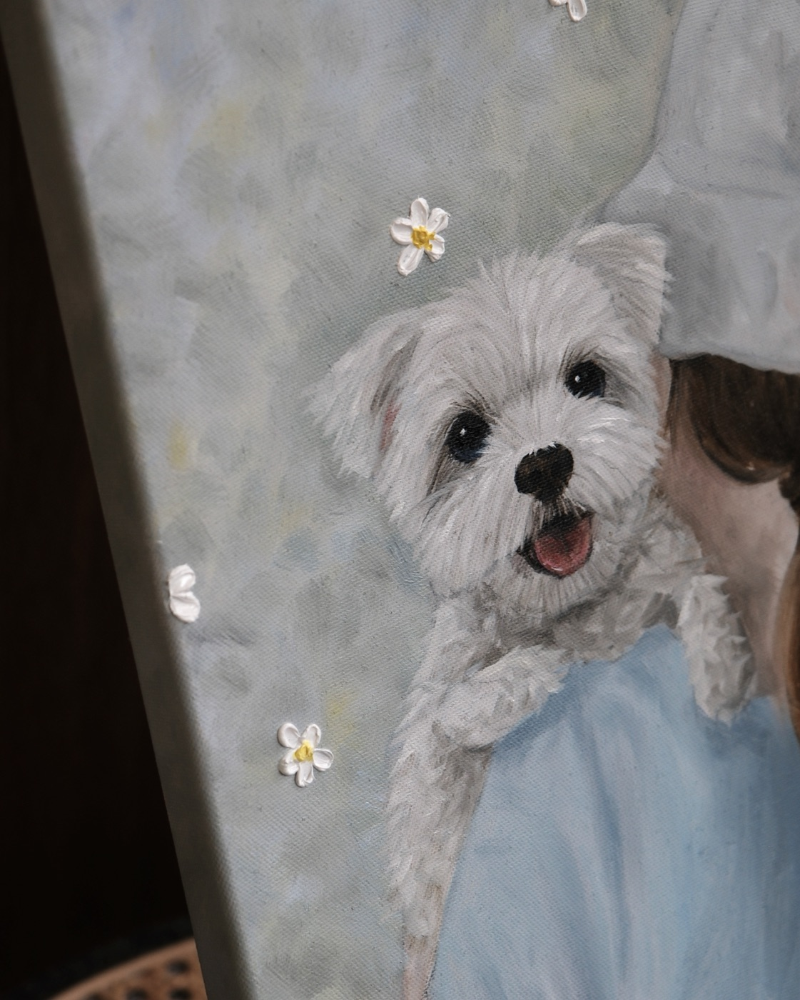
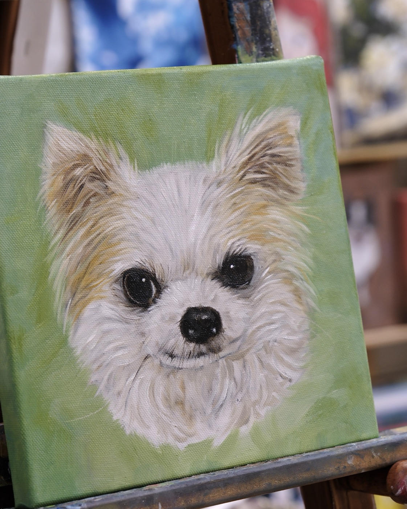
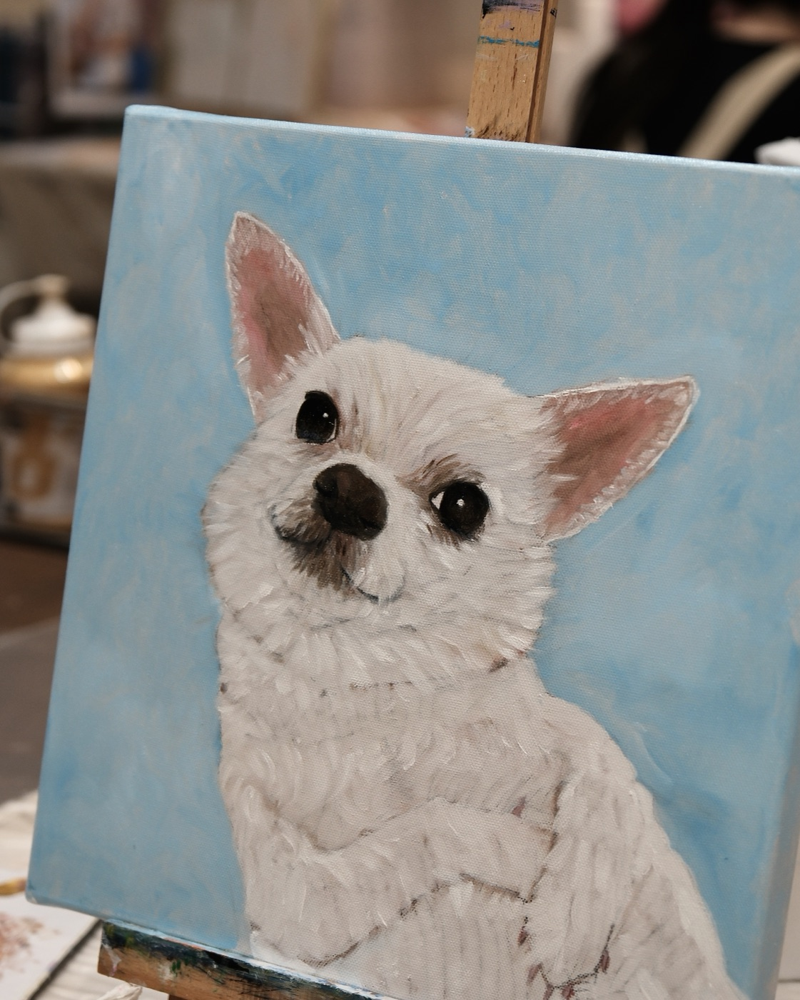
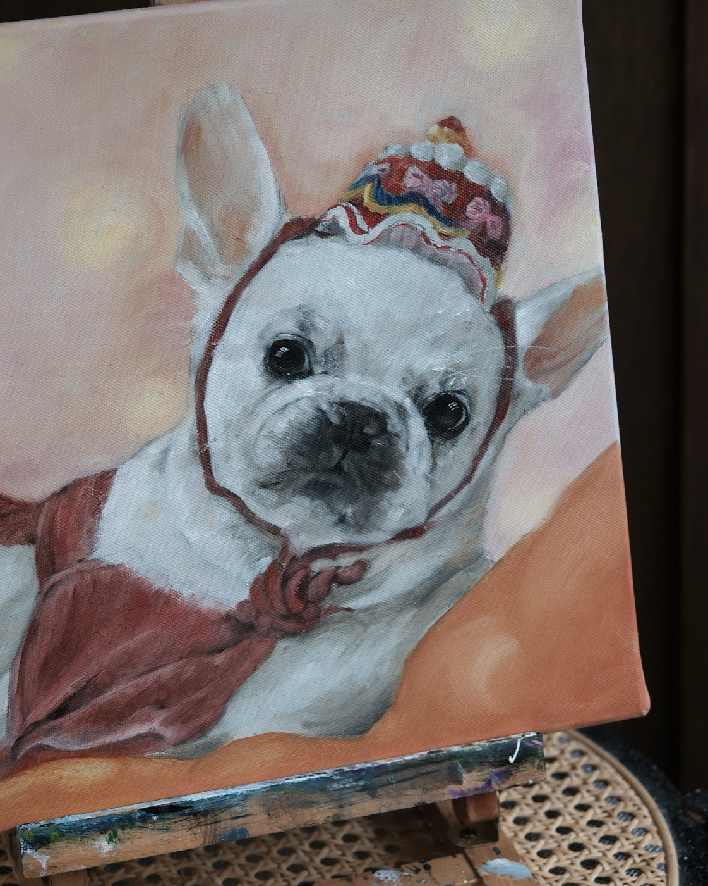
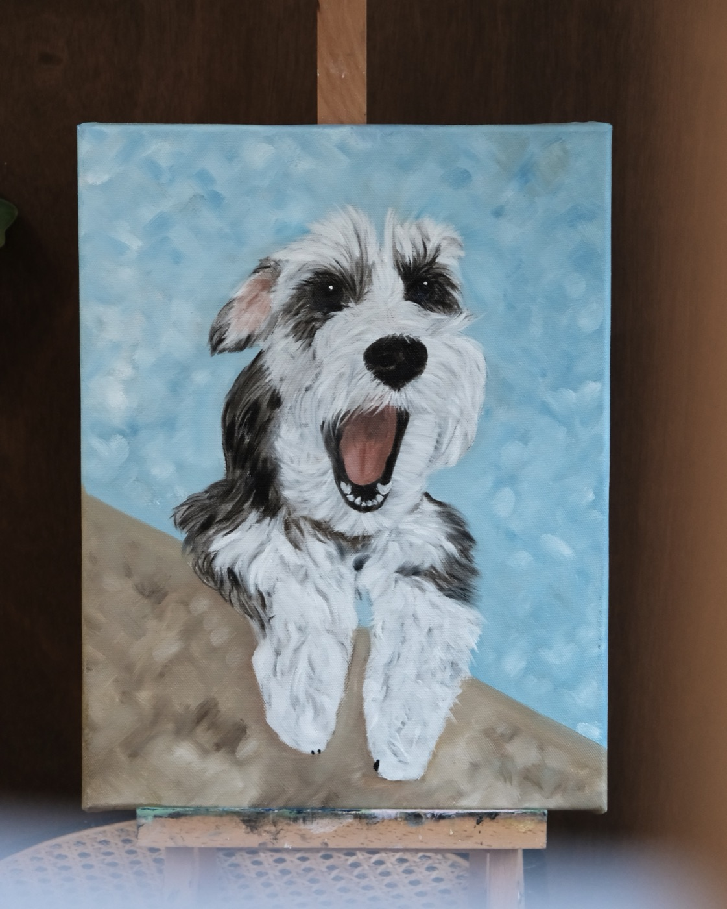
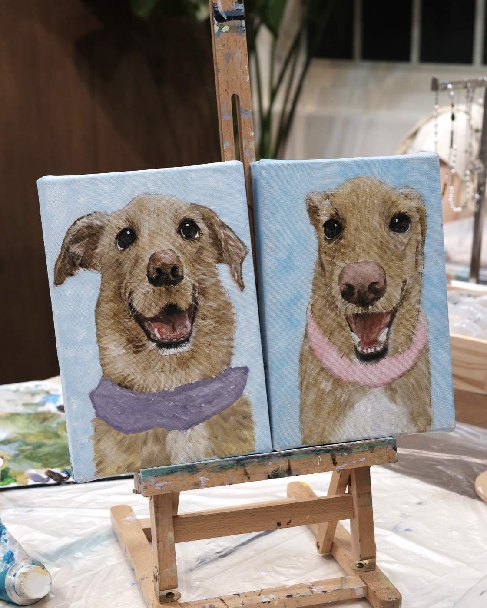
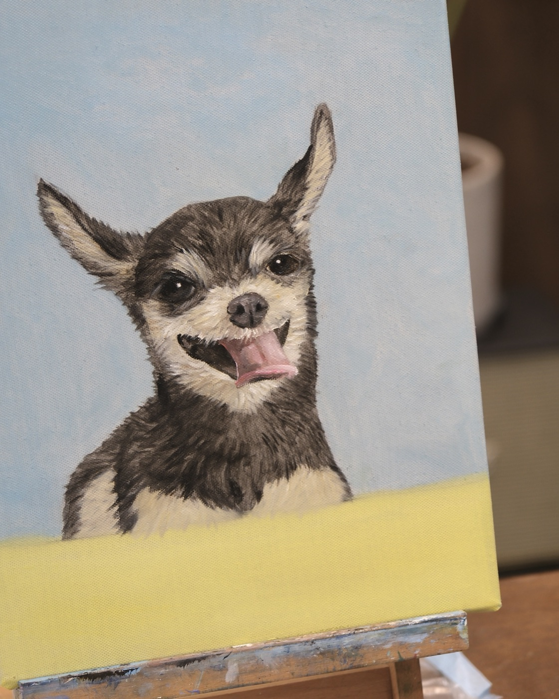
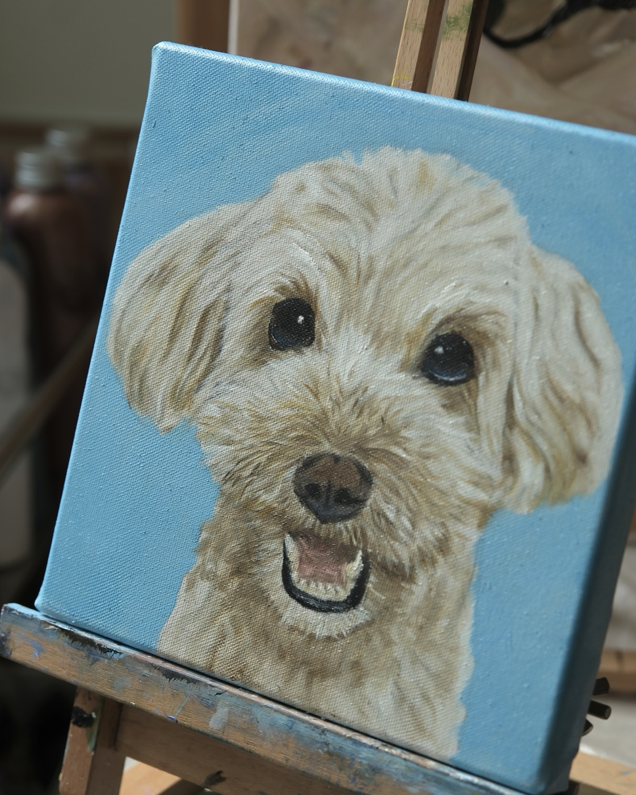

畫室常態課程
寵物油畫
帶著家裡毛孩的照片來畫室，用油畫顏料畫出屬於牠的肖像。
單隻寵物通常一堂課就能完成，是很多同學開始接觸畫畫的第一堂課。
上課怎麼進行
會先由老師簡單打輪廓，同學試著把細節用鉛筆刻畫，老師確認調整後就可以開始上色。
上色會先從簡單的底色開始，讓同學先感受畫筆跟顏料畫在畫布上的感覺。
接著依照毛孩的品種、毛髮跟顏色，用顏料堆疊出不同的層次跟質感。
用的是乾得比較慢的油畫顏料，方便慢慢做出毛髮蓬鬆柔軟的漸層效果。
單隻寵物大約2到3小時可以完成，實際時間會依照片複雜度略有不同，建議留多一點時間給自己。
毛髮畫法
不同品種、顏色的毛，畫法也不一樣，基礎大概可以分成長／短、直／捲、硬／軟，組合起來就是家裡寶貝的樣子。
同一隻寵物，不同部位的毛也會有一點差異，畫的時候會照實呈現這些細節。
尺寸與畫布
畫布分兩種尺寸：小尺寸適合畫臉加一點點身體，不建議畫全身；大尺寸可以畫全身，但身體的精緻度會比臉部低一些，身體本來就比臉難畫。
兩種尺寸都可以選擇方形、長方形或圓形的畫布。
背景以單色、雙色為主，最多做一些漸層暈染，沒辦法畫太複雜的背景，可以先想一下喜歡的背景顏色。
準備照片的建議
解析度要夠高、毛流清楚，顏色盡量接近寵物本來的樣子，避免逆光或光線太暗的照片。
建議用近距離拍的照片，不要用遠拍再放大的圖。
如果是已經不在身邊的毛孩，或是照片比較模糊，也可以直接傳給我們討論，看看需要什麼樣的協助。
如果有好幾張候選照片拿不定主意，建議挑最多3張傳給我們，我們會依構圖、毛色呈現、清晰度協助評估，傳太多張反而會拉長討論時間。
圖片建議在上課前一週先傳給我們討論，如果有比較特殊的需求，也請提前告訴我們原因。
想畫兩隻以上
可以畫多隻寵物的合照，加購價格是：大張加一隻，加價 $700、時間延長1.5小時；小張加一隻，加價 $500、時間延長1小時。
整堂課時間會因此拉長至三到四小時，需要當天一次畫完，沒辦法分次進行。
如果兩隻寵物是分開拍的照片，需要注意各張照片的拍攝角度與光線盡量一致，避免合成後比例或色調不協調。
帶毛孩來畫室
可以，但依寵物種類有不同的注意事項。
狗：大型犬每時段限制1到2隻，小型犬建議包尿布以維持環境整潔，並自備牽繩。
貓：不建議帶來，貓咪容易緊張、亂跳亂躲，也可能因為要兼顧貓咪而影響同學作畫；若堅持要帶，僅能全程放在提籠內，不能放出來活動。
其他寵物（如爬蟲類、烏龜、天竺鼠等）：需自備籠子全程安置，另外請自備寵物飲用水，畫室不提供。
畫室以人為主要使用空間，非寵物專用場地，地面或地毯可能殘留少量顏料、珠珠等手作材料，無法做到寵物專用場所等級的清潔，若毛孩比較敏感或容易誤食小物，請自行評估是否適合帶來，或使用提籠、外出袋隔離接觸地面。
適合誰來上
寵物油畫其實是畫室最早期的課程之一，很多同學也是從這堂課開始接觸畫畫的。
多數同學上一次畫畫都是小時候的事，幾乎都是沒有經驗的初學者，老師會把步驟拆解成一步一步的指令，帶著同學完成作品。
只要願意好好把畫完成，就算畫到一半覺得畫壞了，老師也會協助救回來，不用擔心自己不會畫。
自己畫來留念，或是畫給別人當禮物，都是很多同學的選擇。
學員作品
這些都是完全沒有畫畫經驗的同學，第一次拿畫筆就親手完成的作品——只要帶著想畫完的心來，一堂課就能把毛孩的樣子留下來，也很適合當作送給朋友的禮物。










狗狗
貓咪
學員作品陸續整理中，敬請期待。
兩隻以上
學員作品陸續整理中，敬請期待。
常見問題
我真的不會畫畫，可以嗎？
可以，幾乎所有來畫寵物肖像的同學都是第一次畫畫，老師會一步步帶著完成，就算中途畫得不太順利，也會協助調整回來。
一堂課真的可以畫完一隻寵物嗎？
通常可以，單隻寵物大約2到3小時可以完成，實際時間會依照片複雜度略有不同。
可以畫兩隻以上的寵物嗎？加購怎麼算？
可以，加購價格是大張加一隻加價 $700、時間延長1.5小時，小張加一隻加價 $500、時間延長1小時。整堂課時間會拉長至三到四小時，需要當天一次畫完，沒辦法分次進行。
照片要怎麼準備？
建議用解析度高、毛流清楚、不逆光的近距離照片，顏色盡量接近寵物本來的樣子。如果是已經不在身邊的毛孩，或照片比較模糊，也可以先傳給我們討論需要什麼協助。建議上課前一週先傳圖片討論，有好幾張候選照片的話最多挑3張讓我們協助評估。
可以帶寵物一起來嗎？
依寵物種類不同：狗，大型犬一個時段限1到2隻，小型犬建議包尿布並自備牽繩；貓不建議帶來，容易緊張亂跳，堅持要帶只能全程留在提籠內；其他寵物（爬蟲類、烏龜、天竺鼠等）需自備籠子全程安置。畫室不提供寵物飲用水，請自行準備。